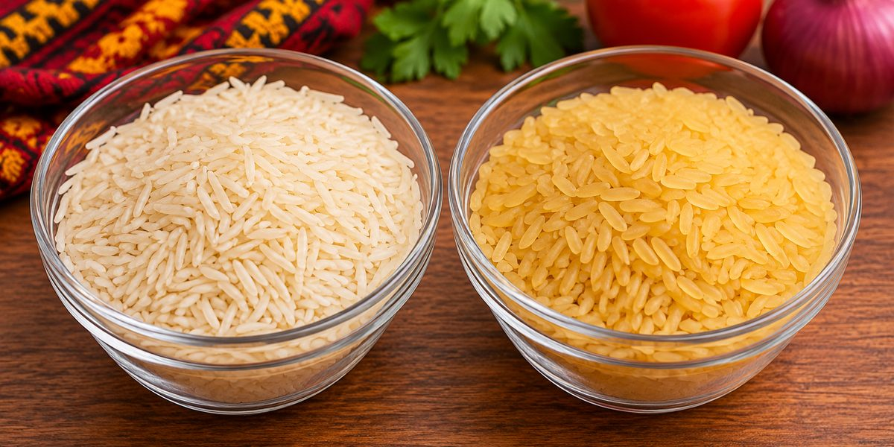

Orientation
How you prepare the rice affects how much liquid it needs and how it cooks in the tomato mixture. Prepare it according to its variety.
Why it matters: Rice prepared the wrong way can end up mushy or undercooked, however well you manage the pot.
Two rice varieties, two methods
Compare the two bowls:
- the long, slender grains on the left (basmati)
- the pale-golden parboiled grains on the right (a harder variety)

Basmati or softer rice
- Measure the required quantity.
- Place it in a suitable container.
- Wash it with hot water, following the demonstrated procedure.
- Get it ready to add to the tomato and broth mixture.
Harder rice varieties
Such as the Nigerian rice in this demonstration.
- Measure the required quantity.
- Place it in a pot with water.
- Parboil for about five minutes.
- Watch it so it doesn’t overcook.
- Get it ready to add to the mixture.
Don’t over-parboil
The rice keeps cooking once it goes into the tomato and broth mixture. If it is already too soft, it may turn mushy in the final stage.
The texture you are aiming for
- Fully cooked
- Comfortably soft
- Generally whole and separate
- Not excessively wet
- Not mushy
Rice varieties differ. Don’t assume every type needs the same washing, parboiling or liquid. Follow the method for the rice in your recipe.
Quick check: rice preparation
Key takeaways
- Identify the rice variety before you prepare it.
- Basmati or softer rice: wash with hot water. Harder rice: parboil for about five minutes.
- Don’t over-parboil — the rice finishes cooking in the pot.